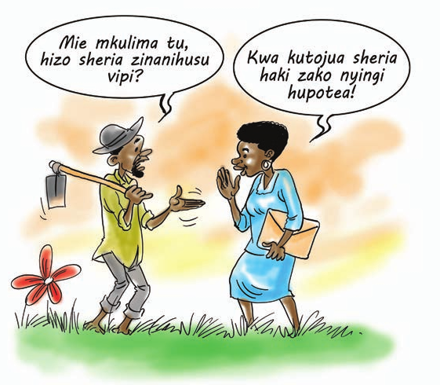
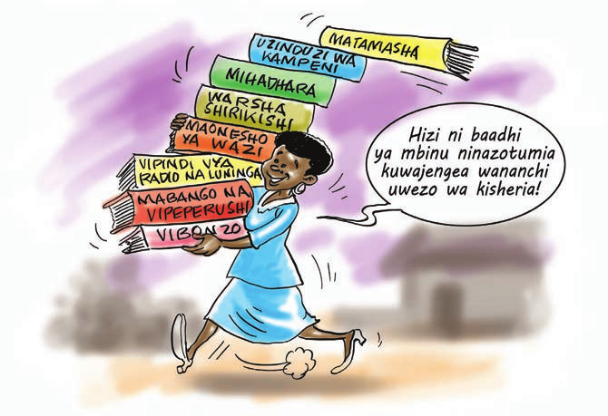

Kujenga uwezo wa jamii kutumia sheria kama nyenzo ya kulinda, kutetea, kutafuta na kutekeleza haki.
Kuhakikisha kwamba, baada ya kumalizika kwa mafunzo ya mada hii washiriki watakuwa na:
Mada hii imegawanywa katika sehemu kuu 2:
Sehemu ya 1: Kujenga Uelewa wa Sheria kwa Jamii
Mwezeshaji uliza maswali ya jumla kwa washiriki kubaini uelewa wao juu wa sheria mbalimbali. Hakikisha unapata ushiriki wa wote wakati wa kupokea majibu:
Mwezeshaji kwa kushirikiana na washiriki wajadili njia muafaka kutoa elimu ya uelewa wa sheria kwa jamii husika kwa kutathmini faida na mapungufu ya kila mbinu inayopendekezwa. Lengo ni kusaidia washiriki wajue umuhimu wa kutumia njia sahihi kufikisha elimu ili kuleta ufanisi na kuepuka madhara yanayoweza kutokea.
Uelewa wa Sheria ni uwezo wa jamii fulani kujua sheria mbalimbali na uhusiano wa sheria hizo na maisha yao ya kila siku. Mara nyingi uelewa wa kisheria huwafanya wananchi kung’amua kuhusu ushiriki wao katika utungwaji wa sheria na pia utawala wa sheria. Kwa maana pana, zaidi uelewa wa sheria utaonekana iwapo wananchi watakuwa na uwezo wa:
Kwa maana nyingine, jamii isiyo na uelewa wa kisheria itaona kuwa sheria hazifahamiki na watu, watu hawashiriki katika kutoa maoni wakati wa utungwaji wa sheria na pia hakuna rasilimali toshelevu kuwezesha utekelezaji wa sheria hizo.
Haki za watu ikiwemo mali na nyezo zake za kiuchumi zinaposhindwa kulindwa na sheria, mtu huyu huishi mazingira hatarishi, hukosa usalama na kuwa na uwezo mdogo katika uzalishaji. Kwa maana hiyo, ‘Uelewa wa Sheria’ unabeba maana pana zaidi kuonyesha umuhimu wake katika maendeleo na ukuaji wa kiuchumi wa mtu au kundi la watu.
Mbali na mambo mengine, kipengele muhimu sana katika kuongeza uelewa wa sheria kwa jamii ni utoaji wa elimu. Utoaji wa elimu ya kisheria ni muhimu sana kwa kuwa mbali na watu kupata elimu, pia jamii itaweza kupata taarifa muhimu kuhusu sheria. Cha muhimu ni kuhakikisha taarifa hizi zinatolewa kwa wakati na kwa usahihi.
Uelewa wa sheria kwa kundi la wanawake pia ni muhimu sana kwa kuwa kundi hili limebaguliwa na kutengwa kufikia haki nyingi. Ni jukumu la Serikali na asasi za kiraia kutoa elimu kwa makundi mbalimbali yaliyo na changamoto ili yaweze kufikia huduma za kisheria.
Uelewa wa sheria kwa jamii una faida kubwa zifuatazo:
Ziko njia mbalimbali zinazoweza kutumika kuandaa Programu ya kujenga uelewa wa sheria kwa jamii:
Ziko njia mbalimbali zinazoweza kutumika kutoa uelewa wa sheria kwa jamii.
Baadhi ya njia hizo ni:
Kwa kuwa lengo la kujenga uelewa wa sheria kwa jamii hulenga pia kuleta mabadiliko kuhusu mwenendo wa watu na taasisi husika basi vipingamizi huweza kutokea.
Ni vizuri kubainisha vipingamizi na kuwa na mikakati ya kuvishughulikia. Uzoefu unaonyesha vipingamizi vyaweza kusababishwa na elimu duni kwa jamii, umaskini au vikwazo vya kiuchumi, lugha, misimamo inayotokana na mila, desturi na tamaduni, imani na itikadi zinazoleta mitazamo tofauti, hali ya kisiasa na mwamko duni wa jamii kwa ujumla.
Ni vizuri kutathmini kama kuna matokeo chanya kwa jamii iliyolengwa kufikiwa katika kupata uelewa wa sheria. La muhimu ni je, watu kwa kuitumia mfumo wa sheria, wanaweza kujiongoza wenyewe na kuelewa kwa umakini kila hatua wanayoichukua?. Kama jibu kwa swali hili litakuwa ni ‘Ndiyo’ basi hii ni dalili nzuri ya kuwepo kwa uelewa wa kutosha wa sheria.
Kipimo cha kuwepo kwa mafanikio ya uelewa wa sheria ni iwapo jamii:
Kuandaa mafunzo ya wawezeshaji kwa wanajamii kupitia warsha kutasaidia kujenga timu ya wawezeshaji wenye ujuzi. iwapo watachaguliwa toka katika vikundi mbalimbali vya jamii basi wataweza kupeleka elimu na ujuzi katika vikundi vyao na pia kwa jamii wanayoshirikiana nayo. Baada ya kukamilisha mafunzo ni vizuri wawezeshaji wakaandaa mpango kazi utakaotumika kueneza uelewa wa sheria kwa jamii husika. Pale inapowezekana, ufanyike uchambuzi wa mahitaji muhimu kama vifaa vinavyohitajika kufanikisha shughuli zao.
Mafunzo ya jamii ni muhimu yakaandaliwa katika ngazi ya kaya au kijiji na yakafanyika kwa kuwepo kwa makubaliano kati ya wawezeshaji na jamii. Maandalizi yazingatie muda, mahali na nyenzo sahihi zinazohitajika ili kufanikisha kuwepo kwa uelewa wa sheria.
Mara nyingi wanajamii wanapopata uelewa wa sheria huanza kushawishi mabadiliko ya sera, kanuni au tabia toka kwa viongozi wao. Ni muhimu ukawepo utaratibu wa kusadia harakati hizo kwa kutoa ushauri sahihi, kuandaa machapisho, mafunzo na kutoa rasilimali muhimu hata kwa uchache kutia moyo jitihada zinazofanywa na vikundi.
Ni vizuri kutumia fursa iliyopo kwa kukaribisha wanafunzi walio vyuoni au waliohitimu fani ya sheria katika ngazi yeyote kutoa msaada wa kitaalamu kwa mashirika, vikundi na pia kusaidia kutoa elimu kwa jamii.
Wanafunzi wa sheria wanaweza kusaidia kuandaa vijarida vya sheria vitakavyotumika kutoa elimu, kufanya tafiti katika jamii, kuwezesha semina na warsha, kuandaa nyaraka za mahakamani na kusaidia ufuatiliaji wa miradi. Mbali na wanafunzi kuwa na uwezo wa kuisadia jamii, pia watapata fursa ya kujenga uwezo wao kitaaluma. Mara nyingi kupitia shughuli za jamii wasomi huweza kuchagua kwa usahihi zaidi wapi uwe mwelekeo wao wao kitaaluma.
Ili kufanikisha shughuli katika kujenga uelewa wa jamii kuhusu sheria ni vyema kufanya ufuatiliaji wa kila shughuli ili kuona kama kuna mafanikio yaliyopatikana. Kama ni mafunzo, basi kubainisha ni kwa kiwango gani washiriki wameongeza uelewa juu ya sheria tofauti na hapo awali. Mara nyingi ufuatiliaji husaidia kurekebisha upangaji na uendeshaji wa shughuli zijazo.
Tathmini kwa upande mwingine hutoa nafasi ya kuona kama kuna matokeo yaliyozaliwa kutokana na shughuli zilizofanywa.
SEHEMU YA 2: Kujenga Uwezo wa jamii kutumia Sheria
Mwezeshaji awagawe washiriki katika makundi kisha toa maswali ili wajadiliane na kujibu yafuatayo
Mwezeshaji toa mchango wako kwenye dhana ya Kujengea Uwezo Jamii Kupitia Sheria. Anza na utangulizi, kisha endelea kufafanua dhana muhimu kwenye ujengeaji jamii uwezo wa kisheria kama inavyoonekana hapo chini.
Ni vizuri mwezeshaji kutumia mifano hai inayoweza kusaidia jamii kuelewa vizuri juu ya uwezo wa kisheria kwa jamii kupitia haki ya kumiliki mali. Washiriki waelezwe umuhimu wa kubuni njia mpya zinazoweza kuongeza ujuzi kwa wanajamii kuhusu jinsi ya kuitumia sheria.
Kujenga ujuzi wa jamii kupitia sheria, kunahusisha utumiaji wa sheria kuongeza/kukuza uwezo wa watu na jamii kutawala maisha yao kupitia elimu ya sheria na hatua za kisheria. Hii ina maanisha mtu anakuwa na ujuzi na maarifa ya kutumia uelewa wa sheria alionao kubadilisha maisha yake na yale ya jamii inayomzunguka. Ujuzi na maarifa huongeza na hujenga uwezo wa mtu kisheria. Pia kupitia sheria, dhana ya utawala wa sheria inapanuliwa kuinufaisha jamii yote kwa ujumla, matajiri kwa masikini, wanaume kwa wanawake, waishio mijini na vijijini, bila kujali kuwa ni kundi la wengi au wachache.
Ujengwaji uwezo hutokea kwa mtu au kikundi cha watu pale hatua fulani zinapofanyika kukuza nafasi ya mtu au kikundi katika kufanya uchaguzi juu ya jambo fulani. Hii inahusisha kuimarisha uwezo wa mtu au jamii kufikiri na kwa makusudi kufanya uchaguzi kwa kubashiri kulingana na rasilimali walizonazo, ikiwamo mali, uwezo na mitazamo na uwezo ambao unajengwa kupitia fursa zilizoundwa katika sheria. Hivyo ujengewaji uwezo huangaliwa kama hatua na matokeo.
Sheria na kanuni zimekuwa zikitazamwa kama kikwazo katika kufikia haki. Ili kuifanya sheria imnufaishe kila mtu, sheria na kanuni zinatazamwa kama chombo kikuu cha kuwajengea uwezo watu wenye kipato cha chini. Hili si suala la haki kuimarishwa, bali kuwapa watu wenye kipato cha chini uwezo wa kutambua haki zilizopo katika mifumo ya sasa na kupambana na mifumo iliyopo inayozuia upatikanaji na utekelezaji wa haki hizo.
Walengwa wa kupatiwa uwezo wa sheria ni kila mwanajamii ambaye hana ufahamu wa umuhimu na juu ya sheria zinazomzunguka. Tofauti inaweza kuwepo kuhusu kiwango cha uhitaji na uwezo wa mtu mmoja mmoja kufikia kiwango cha uwezo wa sheria. Mara nyingi watu maskini na wale wanaoishi katika mazingira magumu au kupitia changamoto za kimaisha, wamekuwa wakipewa kipaumbele zaidi. Neno masikini, katika hali ya kawaida, huzungumzwa katika muktadha wa kipato na mali. Lakini ili kuwapa watu uwezo kisheria, uwezo unaozungumziwa ni wa mtu masikini kuweza kutawala maisha yake. Hivyo basi, masikini ataweza kutawala maisha yake si kwa kutatua ukandamizwaji wa kiuchumi pekee, bali pia ukandamizwaji wa kijamii na kisiasa.
Nguzo kuu nne zilibuniwa na Tume kuhusu kuwapa watu maskini uwezo, kupitia sheria, kama ajenda kuu ya utekelezaji katika kuwapa watu uwezo kupitia sheria ambazo ni lazima zipewe nafasi katika juhudi zozote za kitaifa na kijamii za kuwapa watu wenye kipato cha chini ulinzi na fursa ya kujiendeleza.
Mpango wa kuwapa watu uwezo kupitia sheria unaweza kutimia tu kupitia mabadiliko ya mifumo yanayolenga kuwapa watu fursa ya kutumia uwezo wao wa kiraia na kiuchumi. Nguzo hizi nne ni:
Haki ya kwanza miongoni mwa haki zote ni haki inayotoa hakikisho la kupatikana haki zingine zote: kutendewa haki na utawala wa sheria. Uwezo wa kupitia sheria hauwezi kupatikana wakati watu masikini wananyimwa mfumo bora wa kisheria, aidha kupitia sheria mbovu au kupitia haki. Haki na majukumu ya jamii yanapotekelezwa kupitia sheria bora, kunakuwa na manufaa yasiyo na kipimo kwa kila mtu, hasa wenye kipato cha chini.
Kuhakikisha upatikanaji wa haki sawa si suala rahisi. Hata kama mfumo wa sheria unatambua usawa wa watu wote katika katiba, upatikanaji wa haki sawa unaweza kufikiwa tu kupitia kujitolea kabisa kwa serikali na taasisi za umma katika utekelezaji. Kwenye nguzo hii ya kwanza, hatua za kuwapa watu uwezo kupitia sheria lazima zihakikishe mambo yafuatayo:
Shirika: Women Legal Aid Centre (WLAC)
Mradi: Kampeni ya TUNAWEZA
Lengo: Kutokomeza Ukatili wa Kijinsia katika jamii
Shughuli:
Huduma ya msaada wa kisheria na elimu ilitolewa kwa Aisha K. (miaka 52) aliyesaidiwa kufungua shauri la mirathi Mahakama Kuu ya Tanzania mwaka 2009. Mbali na kupewa huduma ya msaada wa sheria WLAC Aisha alipokea elimu ya mirathi na haki za kisheria kupitia mafunzo yanayotolewa kwa wateja siku za huduma. Elimu hiyo imempa uwezo wa kujiamini. Aisha aliamua kutoa elimu aliyopata kwa wanawake wengine katika eneo la Manzese anakoishi. Mara kadhaa Aisha amewaleta wanawake wenye uhitaji wa kisheria kupata ushauri WLAC na wengine wameweza kufungua kesi kutokana na matatizo waliyokuwa nayo. Aisha huwasindikiza wanawake mpaka WLAC na kuhakikisha wamehudumiwa ipasavyo.
Mafanikio:
Maisha ya Aisha yamebadilika kabisa, kwani amekuwa mwanamabadiliko katika
jamii yake kwa kujituma kusaidia wanawake wanaopitia changamoto za kisheria.
Umri wa miaka 52 alionao si kikwazo cha kuendeleza harakati zake kwa jamii.
Wanawake zaidi wananufaika kupitia kwake
Kumiliki mali mtu binafsi au kwa vikundi ni haki ya binadamu. Mfumo halisi wa kusimamia umiliki wa mali unajumuisha vyombo vinne:
Kila moja ya vyombo hivi, kinaweza kukosa kuwafaidisha watu wenye kipato cha chini au hata kuwakandamiza. Mfumo unapofanya kazi vizuri, unakuwa chombo cha kuwajumuisha watu wenye kipato cha chini katika uchumi rasmi, na wanapata njia ya kujiimarisha kijamii. Ikiwa mfumo mzima unashindwa kufanya kazi au hata mojawapo wa vyombo tanzi, watu wenye kipato cha chini wananyimwa fursa na kubaguliwa.
Ili mali ziweze kutumika kuleta faida, zinahitaji kutambuliwa rasmi katika mfumo unaojumuisha haki za mtu binafsi au makundi ya watu kumiliki mali. Hii inajumuisha: Kutambua haki za jamii katika ngazi za chini
Shirika: Morogoro Paralegal Centre (MPCL)
Jina la mradi: Mama Ardhi
Lengo la mradi: Kujengea jamii uelewa kuhusu sheria za ardhi na
umiliki wa ardhi kwa jamii hususani wanawake.
Mfadhili: Action Aid Tanzania
Eneo la mradi:
Mradi ulipangwa kutekelezwa katika vijiji 10 vya mkoa wa Morogoro ambavyo
ni Mvuha, Dalla, Lukulunge, Kikundi, Kiloka, Kiziwa, Kibangile, Mtamba, Kongwa
na Tawa. Wakati wa utekelezaji wa mradi kijiji cha Tawa kiliachwa kutokana
na kugawanywa kuwa vijiji viwili.
Yaliyofanyika:
Mafanikio
Changamoto
Hatua za Kuwapa watu uwezo kupitia sheria ya haki za kumiliki mali lazima izingatie mambo yafuatayo:
Watu masikini hutumia muda mwingi mahali pa kazi huku kipato bado hakitoshi kumudu maisha. Uhalali au kukubalika kwa uchumi kunategemea haki za msingi za ajira, sawa na uwezo wa kufanya kazi unaohitajika ili uchumi kukua. Pia kuimarika kwa haki za kazi na za kijamii, kunategema soko la kiuchumi lenye ufanisi na linalofanya kazi vizuri. Hii inaendana na kubadili mtindo wa siku zote wa uzalishaji duni, mapato ya chini na kuhatarisha maisha kazini na nafasi yake kuchukuliwa na utekelezaji wa kanuni za kimsingi za haki mahali pa kazi pamoja na ajenda ya mazingira bora ya kazi na mkakati wa kuhakikisha usalama na fursa kwa wafanyakazi katika biashara zisizotambulika rasmi.
Hili linawezekana kwa njia zifuatazo:
Watu wenye kipato cha chini wanapaswa kupata haki za mahali pa kazi na vile vile haki ya kuendeleza biashara zao wao wenyewe. Hii inajumuisha haki zifuatazo kwa mjasiria mali:
Haki hizi ni lazima zipatikane kwa wenye biashara ndogondogo katika nchi inayostawi kama Tanzania, ambako biashara nyingi kama hizi zinaendeshwa na wanawake na zinaajiri sehemu kubwa ya nguvukazi. Mara nyingi kufanikiwa au kushindwa kwa sekta hii ya biashara ndogondogo kunaleta tofauti kati ya ufanisi na mdororo wa kiuchumi; nafasi nyingi za kazi na ukosefu wa ajira; kubuniwa kwa vyama vya wafanyabiashara na ukosefu wa usawa katika biashara.
Mhusika: Equality for Growth (EfG)
Mradi: Sauti ya Mwanamke sokoni (2012-2014)
Malengo: Kujenga sauti na uchumi wa wanawake wafanyabiashara sokoni
ili waweze kudai uwajibikaji na utawala bora katika eneo la biashara
Eneo la mradi: Masoko 18 ya Dar-es-Salaam
Mradi ulilenga kujenga uwezo wa wafanyabiashara kuelewa haki zao za kiuchumi na uwezo wao kama raia katika kuleta mabadiliko katika masoko. Elimu ya sheria ilitolewa kwa wanachama wa VICOBA vilivyoanzishwa na viongozi kupitia Kamati za soko.
Mafanikio:Mwezeshaji eleza kuwa ni muhimu kwa washiriki katika kufanikisha lengo la kuwapa watu uwezo, kisheria, kuelewa kwa kina na mapana dhana hii. Katika kufanikisha hili, umasikini ni muhimu uangaliwe kama ukandamizwaji katika uwezo na fursa badala ya kipato pekee. Kwa mantiki hiyo, umasikini ni kiasi ambacho uwezo na fursa za mtu kufurahia na kuchangia upatikanaji wa haki zake za msingi unazuiliwa na sababu zilizo nje ya uwezo wake.
Zipo sheria nyingi Tanzania ambazo zinaweza kuleta tofauti katika kuwapa watu uwezo. Baadhi zinawalenga watu wanaokandamizwa pekee na baadhi zinalenga makundi yote ya watu. Sheria hizi zimeongelewa katika mada tofauti za kitabu hiki. Baadhi ya mifano ya sheria zenye matokeo ya kuwapa watu uwezo ni:
Ili kuwajengea uwezo watu, hasa katika uwezo wa kufanya biashara, uanzishaji na utekelezaji wa haki za umiliki wa mali na za wafanyakazi ni muhimu sana. Tokeo la kuwa na mfumo imara wa umiliki na uhifadhi wa mali na kuchangia kukuwa kwa pato la mwananchi hauchangiwi na uwepo wa sheria bora pekee, bali pia utaratibu mzuri wa namna gani ya kushawishi tabia ya mtu mmoja mmoja na ushirika.
Mabadiliko ya sheria pekee hayawezi kukagua kukua kwa biashara au kuhakikisha ulinzi na uhifadhi wa mali ambayo ni muhimu katika uwekezaji na uzalishaji.
Jitahada za kuanzisha biashara hufeli kwa sababu:
Haki ya kumiliki na kuhamisha mali, aidha kwa kuuza au kukodisha, ni sifa muhimu katika kumjengea uwezo mtu yeyote. Umiliki pekee hautoshi, bali mifumo ya kisheria na ya kijamii inabidi itambue umiliki na uhifadhi wa mali ili mwenye nayo aweze kuitumia kibiashara.
Hoja hii ni muhimu kwa sababu endapo mtu ana umiliki wa mali, lakini mifumo ya kisheria na kijamii haitambui umiliki huo, basi matokeo matatu yanaweza kumkabili:
Kwa hiyo utambuzi wa haki ya umiliki na uhifadhi wa mali ni muhimu katika kumjengea mtu uwezo, na katika biashara, thamani ya mali inaendana na utambuzi na uhifadhi kisheria.
Ni muhimu pia, kufahamu kwamba nchini Tanzania, kuna mahusiano ya kibiashara katika mazingira mengi ambayo hayaongozwi au kuidhinishwa na sheria, bali hufanyika kwa amani kwa sababu jamii inatambua mahusiano hayo.
Mazingira haya pengine ni rahisi zaidi kukua baina ya watu wenye kipato cha chini hasa kwa lengo la makusudi la kukwepa mifumo rasmi ya uchumi ambayo hutizamwa na kundi hili kama kandamivu. Hivyo utambuzi wa mali kisheria na utumiaji wa kibiashara unahitaji kukubalika katika jamii ili mfumo huo rasmi ufanikiwe.
Kwa watu wenye kipato kidogo, ardhi ni rasilimali muhimu katika kuwajengea uwezo kiuchumi. Lakini pia, utambuzi wa mali nyingine zinazoweza kumilikiwa na kundi hili ni muhimu pia. Kwa mfano mazao yanayotarajiwa baada ya kuvuna yanaweza kutumika kama kigezo cha kupata mikopo endapo mfumo wa kisheria ukitambua.
Katika kuwapa uwezo wa kisheria, mwelekeo wa kijamii unaangalia uwezo wa mtu wa kipato cha chini kudai au kufanyia kazi haki alizonazo kisheria. Mwelekeo wa Kijamii katika kuwapa watu uwezo unajuimsha:
Uwepo wa chombo/vyombo madhubuti, kama vile serikali ya mtaa, polisi, ambavyo vinahakikisha kuwa usalama wa maisha na mali za watu vinalindwa kwa ajili ya kuwapa fursa za maendeleo. Uhalifu, vurugu na migogoro hugharimu maisha ya watu ambao ndio nguvu kazi, lakini pia huathiri shughuli za kiuchumi na uwezo wa watu kudai na kulinda haki zao kwa umoja pasi hofu.
Umuhimu wa Ushirikishwaji upo hasa katika maamuzi. Wanawake hutengwa katika kufanya maamuzi yahusiyo haki zao. Kukosa taarifa na fahamu kuhusu sheria, kanuni na taratibu katika lugha nyepesi kunachangia kuwanyima wanawake fursa ya kuboresha maisha yao. Hii husababisha kutowajibika kwa vyombo vinavyopaswa kusimamia haki hizi.
Ukosefu wa elimu ya sheria, hasa kwa machapisho, unachangia sana ugumu wa watu kufahamu na kupigania haki, fursa na ulinzi wa kisheria.
Jamii isiyokuwa na afya nzuri, haiwezi kupigania au kutetea haki zake na kutumia fursa zilizopo. Hali halisi ni kwamba juhudi zozote za kuwajengea watu uwezo haziwezi kufanikiwa endapo hakuna upatikanaji wa huduma za afya, ulinzi wa walemavu, au juhudi za makusudi kuzuia vifo vitokanavyo na magonjwa ya mlipuko na ukosefu wa maji salama.
Haya ni mahitaji muhimu sana kwa watu masikini ili kufanikisha usalama wa maisha yao. Mifumo duni ya ulinzi wa upatikanaji wa mahitaji haya huathiri uwezo wa watu wenye kipato cha chini kutetea haki zao na kushiriki kwenye shughuli za kisiasa. Mara nyingi mtu mwenye kipato cha chini yupo tayari kuvumilia ukandamizaji ilihali apate kile kidogo cha kumsaidia kuishi tu. Wajane ni mfano mzuri pale wanapoporwa mali na wakwe zao.
Watu wenye kipato cha chini mara nyingi huwa hawashiriki au hawashirikishwi katika utungaji wa sheria na maamuzi ya kisiasa kuanzia ngazi ya chini kabisa. Demokrasia duni na elimu ndogo vinaathiri uwezo wa watu wenye kipato cha chini kupaza sauti kutetea mahitaji na haki zao. Hivyo ushirikishwaji katika nyanja ya kisiasa ni muhimu katika ujengwaji wa uwezo, kisheria, kwa watu wenye kipato cha chini.
Katika kuwapa watu uwezo kupitia sheria, mambo muhimu ambayo msaidizi wa kisheria anatakiwa ayasisitize kwa mwananchi katika mwelekeo wa kisiasa ni mawili:
Wakati watu wenye uwezo/matajiri na wenye hali hawana ushawishi na uhusiano na watu wenye nguvu, hivyo kujihakikishia ulinzi dhidi ya ukandamizwaji, watu masikini kwa upande mwingine hutegemea zaidi haki zilizobainishwa, kisheria na zinazotekelezeka. Hivyo, si utambuzi wa haki pekee unahitajika, bali pia uwezo wa kutekeleza haki hizo kwa kutumia vyombo vinavyofikika na madhubuti.
Haki za kisiasa ni kipaumbele kwa sababu ni msingi wa ushiriki wa wananchi katika utunzi wa sheria. Kukosekana kwa uhuru wa kuongea na haki ya kupata taarifa kuhusu shughuli za serikali, huwanyima watu taarifa muhimu za kuwajengea uwezo. Vile vile, kuwanyima watu haki ya kukusanyika, inaathiri ushiriki wao katika siasa. Hizi ni nyenzo muhimu kwa watu masikini katika kuwawajibisha viongozi.
Pasipo demokrasia watu masikini hukutana na vikwazo katika kupanga jinsi ya kufikia na kutekeleza haki zao. Ili haki zilandane na mahitaji ambayo ni kipaumbele, ni muhimu sana watu masikini washiriki katika maamuzi. Hili linawezekana tu iwapo kuna demokrasia ya kweli na taasisi zilizokomaa katika demokrasia.
Demokrasia haijengwi kwa kupitia uchaguzi wa viongozi pekee, bali ni muhimu kwa watu wa vijijini kupata fursa ya kuunda vyama vya ushirika na majukwaa ya sera kwa wakulima wadogo na wafanyakazi kwa lengo la kutetea na kusimamia haki zao katika uzalishaji na biashara.
Jambo la msingi pia ni ushirikishwaji wa watu masikini katika vyombo vya utunzi wa sera, ili kukabiliana na ukosefu wa uwiano wa nguvu ambaz o hujitokeza katika siasa.